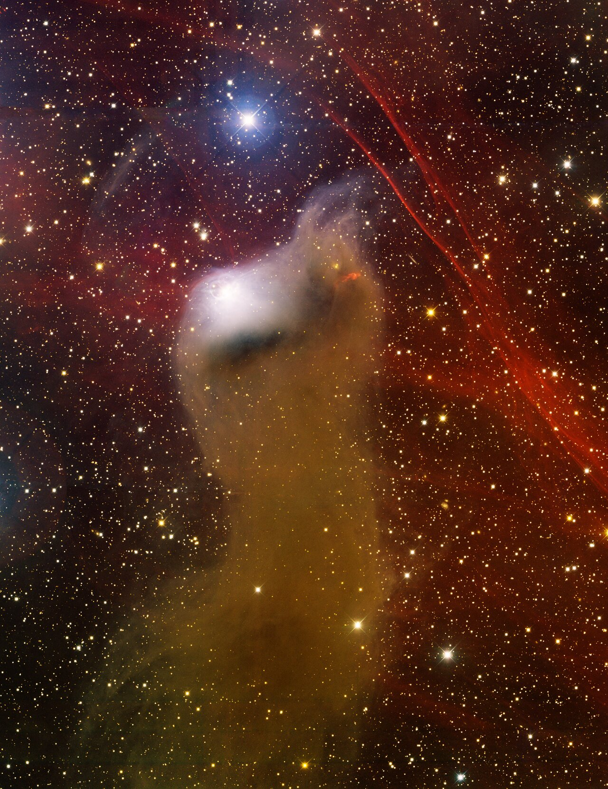
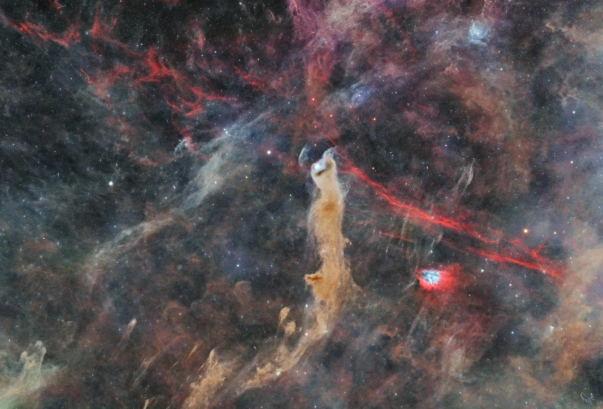

vdB 152, the original “Cave Nebula”
- Name: vdB 152 = Ced 201 = LBN 531
- RA: 22h 13m 30s
- Dec: +70° 15' (J2000)
- Constellation: Cep
- Type: Reflection Nebula
- Size: 6'
German pioneering astrophotographer Max Wolf announced the discovery of "A New 'Cave-Nebula' in Cepheus" in 1908. According to Wolf, "The nebula was found by Dr. Kopff on a plate taken by him with my Bruce-telescope on the night of October 21st, 1908, and I photographed the object as soon as possible with our reflector. It has a very remarkable shape; and, as it forms an important addition to this class of nebulae, I forward the accompanying description....This nebula is a good example of the singular phenomenon of cave-formation amongst Milky Way stars. In some respects it shows the general characteristics of other cave-nebulae [surrounded by a dark void or dust], but it also offer several new features. It forms the end of a long starless lacuna, directed from south to noth, resembling that of the T Cephei nebula. It has a bright condensation seen visually as a star of the ninth magnitude; it shows waves similar to those in the Pi2 Cygni and T Cephei nebulae, but has dark spaces north of the brighter parts, which seem darker than the sky in the background..."

A bright blue reflection nebula lies at the south end of the dark molecular cloud, sometimes called a cometary nebula. Interestingly, the illuminating star, 9th-magnitude BD +69° 1231, is a B9.5 V-type, whose radial velocity is offset by 12 km/sec from the molecular cloud. So, it appears to be a chance encounter/interaction between the star and the molecular gas and dust.
With an 18-inch f/4.3, I described a fairly bright reflection nebula, roughly 1.5' in diameter, involving mag 8.8 BD+69 1231. It was easily picked up at 175x as an obvious, moderately large glow encasing the bright star. On careful viewing the glow extended ~180° on the following side of the star, running clockwise from the NNW around to the SSE. The glow was very weak or non-existent on the SW side. The illuminating star is furthest north in a string with two additional mag 8-9 stars 7' SSE and 12' SSE. STF 2883, a bright double star (5.7/7.7 at 15") shares the same low power field 15' to the SW.
An image of Barnard 175 is missing from his photographic atlas of the Milky Way, but Barnard described it as "Large dark spot, extended north and south, 62' in its largest extent. In its upper part is the star BD +69° 1231 which is nebulous. This is apparently a large, dark nebula, the brighter part of which forms the star BD +69° 1231...It is conspicuous on a photograph of mine made with the Willard lens at the Lick Observatory, September 24, 1895, with 5hr 00m exposure."
B 175 is generally associated with the long dust pillar (LDN 1217) to the NORTH of vdB 152, but Barnard's description and position seem to place it to the SOUTH, so either he made a mistake in the orientation or perhaps "upper part" simply refers to the upper part of his image (not the "northern" end). In the same area is DeHt 5 = PN G111.0+11.6, which was originally announced as an (ancient) planetary nebula on discovery in 1979, but is now considered an ionized ISM shock/excitation zone. It shows up well on narrow-band images of the field.
Scott Harrington discusses vdB 152 in the cover story on van den Bergh reflection nebulae in the just released October issue of Sky & Telescope. So, I'm hoping he'll add more information (and his own observations) on this fascinating region — in any case, check out his article for more on vdB objects!

As always,
"Give it a go and let us know!
Good luck and great viewing!"